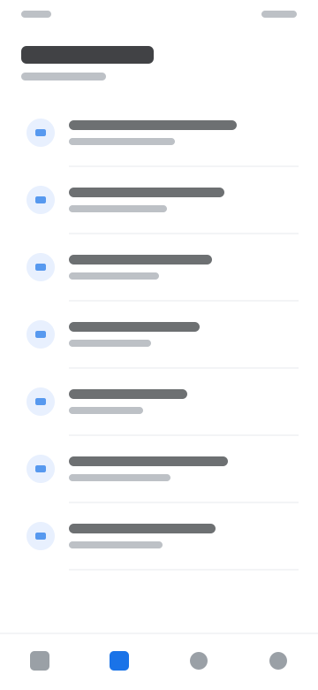
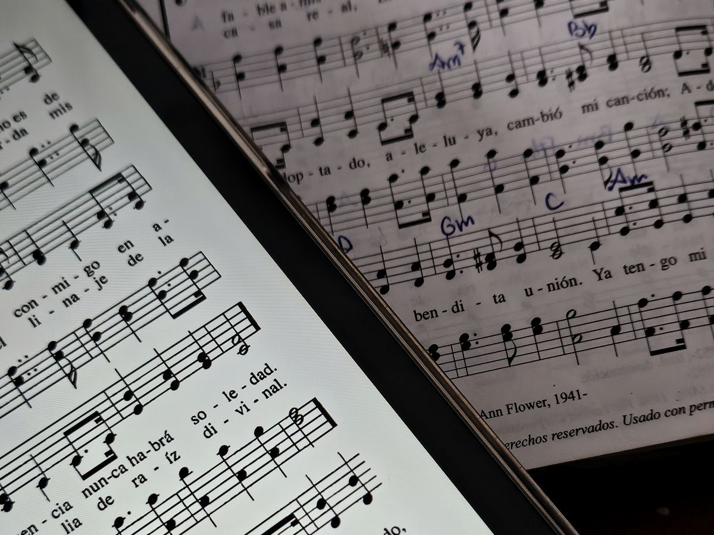
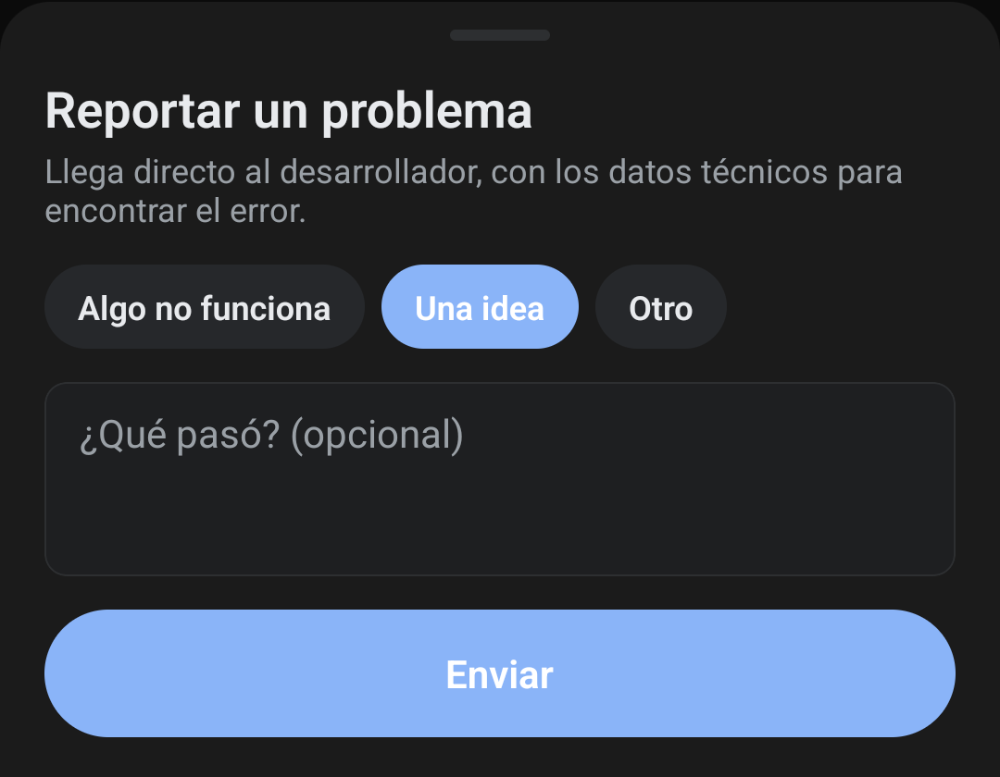

Leer
Hoja continua o modo libro. Acerca con dos dedos y pasa de página con un toque en el borde, con el teclado o con un pedal Bluetooth. Al girar el teléfono sigues en el mismo lugar.


Versión 2.2 · Android
El lector de partituras para tocar y cantar en la iglesia.
Gratis · Sin publicidad · Funciona sin internet
Trabajas con las partituras en PDF que tú agregas. La app se encarga de que pasar de página, acercar y anotar no te saque de la música.
Hoja continua o modo libro. Acerca con dos dedos y pasa de página con un toque en el borde, con el teclado o con un pedal Bluetooth. Al girar el teléfono sigues en el mismo lugar.
Mantén presionado un punto de la hoja para dejar una etiqueta, una nota de texto o de voz. Con el lápiz y el resaltador marcas lo que no quieres olvidar. Cada nota queda como una mariposita que no tapa la música.


Lo que se va a tocar en cada culto, en orden, para ti o para tu grupo. Pasas de una pieza a la siguiente sin buscar.


Quien dirige lleva a todos a la misma página y puede señalar un punto de la hoja. Cada persona lo sigue desde su propio teléfono.


Un teclado casi transparente encima de la hoja. Suena mientras lo tocas y la partitura no se achica.


Entra con tu cuenta de Google solo si quieres respaldar tus listas, notas y marcas, compartir con tu comunidad o dirigir en vivo. Sin cuenta, todo lo demás funciona igual.



Tus listas llevan himnos y secciones como Ofrendas o Palabra: agrega por número, ordena arrastrando y todo tu grupo lo ve al día.
Un aviso suave con el himno del día; al terminar, siguen más himnos de la comunidad.
Ayuda a elegir la versión correcta de cada himno y a cuidar las letras, y recibe insignias por tu aporte.
Conecta tu grupo con Holyrics en la PC: el programa llega listo para proyectar.
Lo que estamos preparando. Puede cambiar mientras lo probamos.
Lo que se canta en tu comunidad y lo nuevo, en un solo lugar.
Ideas de qué cantar según la fecha y los temas.
Un programa para Windows y Linux que lleva las letras de la comunidad a la pantalla de tu iglesia o a tu transmisión.
Leer, anotar y armar listas no pide cuenta ni internet: todo queda en tu teléfono. No hay publicidad y no vendemos datos. Si entras con Google, la app recibe solo tu nombre, tu correo y tu foto de perfil, y tus PDF nunca se suben.
El instalador para Android se publica pronto aquí. Si quieres que te avisemos, escribe a calebchurata@gmail.com.
Por ahora no. Nos enfocamos en una sola plataforma hasta tener una versión estable.
Para llegar a iOS, el equipo de desarrollo necesitaría lo que hoy no tiene: una Mac, un iPhone o iPad para pruebas y la suscripción de desarrollador de Apple. Si usted puede ayudar con eso, cuéntenos y agendamos una reunión.
Desde la app: toque su foto (pestaña Yo), entre a Contribuir y elija Proponer una idea. Marque «Una idea», escríbala y toque Enviar.
 Toque su foto, en la pestaña Yo.
Toque su foto, en la pestaña Yo. Entre a Contribuir.
Entre a Contribuir.
Elija Proponer una idea, escríbala y toque Enviar.En la partitura, toque el centro de la hoja para ver las herramientas, toque la burbuja del borde y elija la bandera «Reportar error». Cuéntenos qué está mal; la página va incluida. Para otros errores: Yo → Contribuir → Reportar un error.

Dudas, errores o ideas: calebchurata@gmail.com.